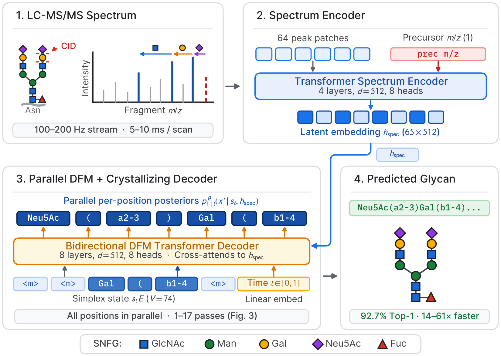
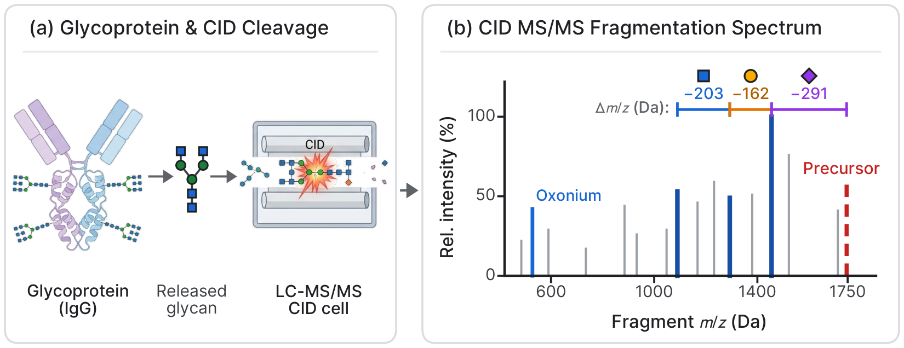
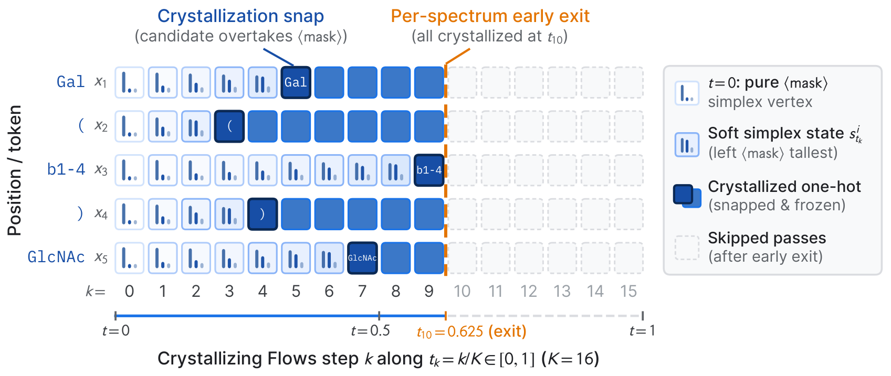
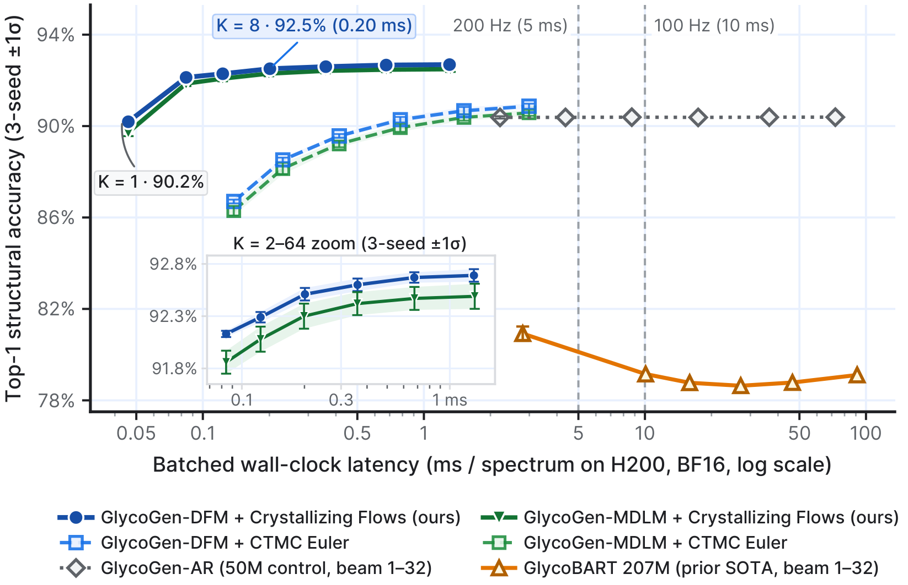
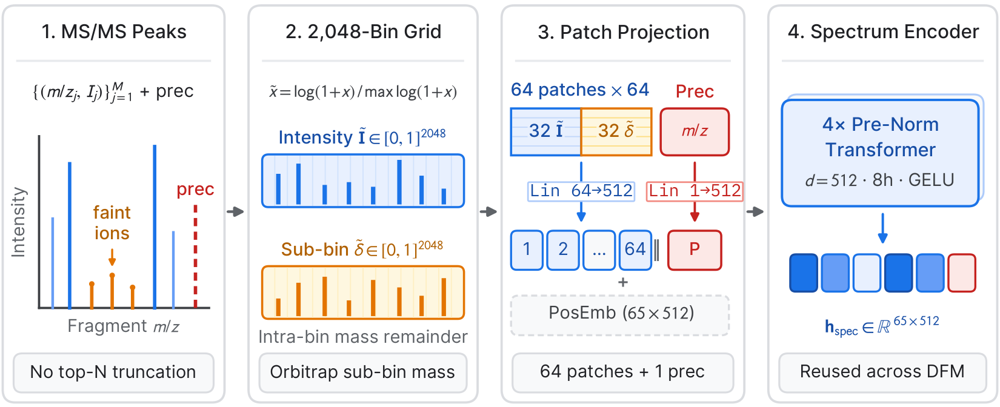
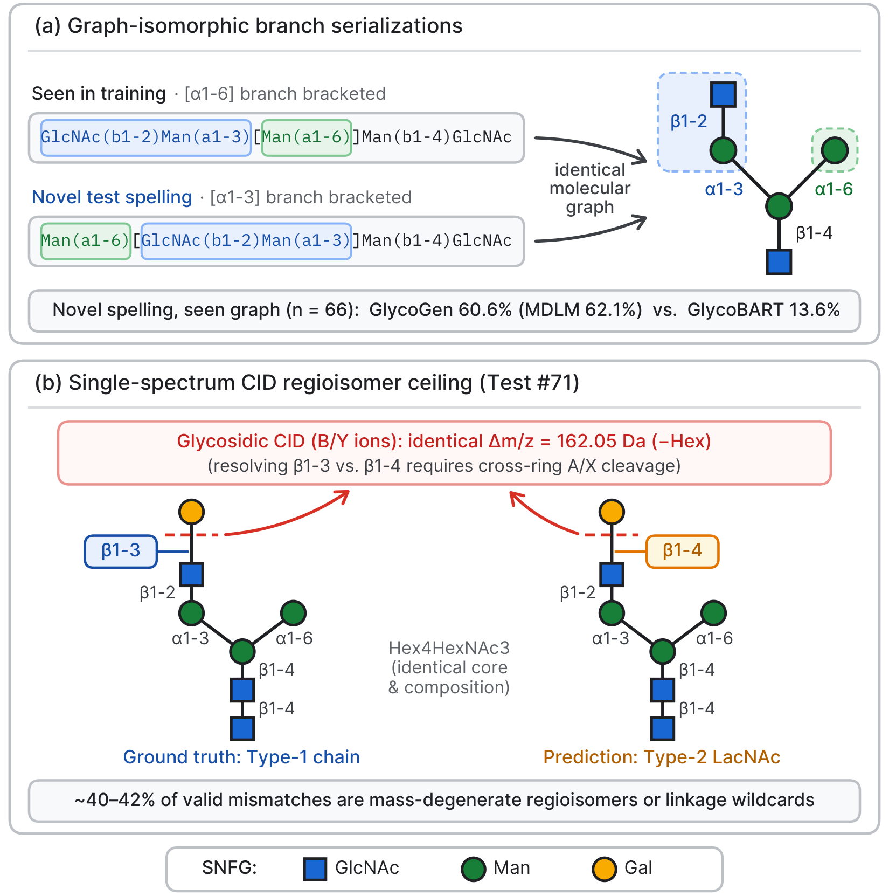

Abstract
Glycosylation is among the most abundant post-translational modifications in biology, governing cellular signaling and the foundational mechanisms of immunity. Because glycans cannot be sequenced from a genetic template, their structure must be inferred directly from tandem mass spectrometry (MS/MS). Modern instruments acquire 100 to 200 spectra per second, yet the prior open-vocabulary state of the art, GlycoBART, is a 207M autoregressive transformer whose sequential decoding precludes live acquisition and large-scale glycomics. Discrete Flow Matching and masked diffusion remove this sequential bottleneck by generating all token positions in parallel, provided a low-step sampler preserves structural accuracy. We introduce GlycoGen, a 50M-parameter Discrete Flow Matching model over fragment spectra, paired with Crystallizing Flows, a deterministic sampler that runs out-of-the-box via mixture embeddings with no retraining. Crystallizing Flows integrate per-token distributions on the simplex, snap each position to a one-hot vector once its argmax leaves the mask, and exit early once all positions crystallize. On the 76,774-spectrum CandyCrunch v2 benchmark, GlycoGen reaches 92.67% top-1 accuracy in 17 passes and 90.19% in a single pass, surpassing GlycoBART by 11.7 percentage points with a 14× to 61× speedup. Setting a new state of the art in open-vocabulary glycan structure prediction, GlycoGen makes the glycome readable in real time and at scale.

Reading Branched Sugar Trees from Fragment Spectra
Unlike linear proteins or nucleic acids, glycans are branched sugar trees serialized into bracketed IUPAC-condensed strings. Low-energy collision-induced dissociation (CID) cleaves glycosidic bonds into neutral monosaccharide losses, while regioisomers lacking cross-ring cleavages establish an intrinsic single-spectrum Bayes error ceiling.

Crystallizing Flows: Deterministic Integration on the Simplex
Standard mask-source CTMC Euler sampling draws a discrete categorical token at each step and discards the rest of the predictive distribution. At low step budgets, random draws compound early mistakes and cause 2-step accuracy to regress below a single forward pass.
Crystallizing Flows instead propagate the full per-position probability vector on the simplex and snap each position to a frozen one-hot vector the exact moment its argmax leaves <mask>. Because all positions crystallize near the midpoint of the trajectory (t ≈ 0.5), every spectrum exits early in roughly K/2 + 1 forward passes with zero inference hyperparameters.

<mask>. Amber cells show crystallized positions whose argmax has flipped to a glycan token, snapping the state to a frozen one-hot vector. The spectrum exits early at the red dashed line once all positions have crystallized.
Pareto-Dominance & Controlled Design Ablations
Across the 76,774 test spectra of the CandyCrunch v2 benchmark, GlycoGen with Crystallizing Flows strictly Pareto-dominates standard CTMC Euler sampling, our matched-architecture 50M autoregressive baseline (GlycoGen-AR), and the 207M GlycoBART model across both accuracy and latency.

| Model & Operating Point | Effective NFE | Latency (ms/spec) | Throughput (spec/s) | Top-1 Accuracy (3 seeds) | Speedup |
|---|---|---|---|---|---|
| GlycoGen-DFM + Crystallizing Flows (K = 1, one-pass) | 1 | 0.046 | 21,883 | 90.19% ± 0.04% | 61× |
| GlycoGen-DFM + Crystallizing Flows (K = 8, recommended) | 5 | 0.201 | 4,975 | 92.51% ± 0.06% | 13.9× |
| GlycoGen-DFM + Crystallizing Flows (K = 32) | 17 | 0.675 | 1,481 | 92.67% ± 0.05% | 4.1× |
| GlycoGen-MDLM + Crystallizing Flows (K = 32) | 17 | 0.676 | 1,479 | 92.47% ± 0.11% | 4.1× |
| GlycoGen-AR (50M matched autoregressive control, beam 1–32) | 33 – 1,045 | 2.21 – 72.66 | 452 – 14 | 90.38% ± 0.05% | 1.3× – 0.04× |
| GlycoBART Reproduction (207M, beam 1 top-1 / beam 32 top-5) | 23 / 720 | 2.80 / 91.21 | 357 / 11 | 80.92% / 86.35% | 1.0× / 0.03× |
Dual-Channel Spectrum Patching & Evaluation Regimes
Rather than truncating spectra to top-N discrete peak tokens and predicting lossy antenna motifs, GlycoGen encodes the entire fragment spectrum as 64 continuous dual-channel patches of L1-normalized intensities and exact sub-bin mass offsets while generating atomic IUPAC tokens directly (+9.5 pp over GlycoBART).

● Approaching the Single-Spectrum Bayes Ceiling
On the 76,203 test spectra whose target glycan appears in training, GlycoGen reaches 93.31% exact graph accuracy, and 99.1% of generated strings are syntactically valid IUPAC glycans. Among the remaining mismatches:
- 41.8% share the exact ground-truth monosaccharide composition and differ only in linkage or branch isomerism (where single-spectrum CID lacks cross-ring cleavage ions or where reference studies differ in wildcard notation such as
a2-?). - 38.4% differ by a single labile fucose or sialic acid residue subject to in-source neutral loss or co-elution.
- Only 19.8% of errors (1.3% of the test set) correspond to genuine core or branch topology mistakes.
● Emergent Molecular Graph Generalization
Because two different IUPAC strings can serialize the same branched glycan tree under different branch traversal orders, we isolate 66 test spectra whose target molecular graph appears in training only under a different IUPAC string spelling:
- GlycoGen-MDLM + CF: 62.1% top-1 graph accuracy
- GlycoGen-DFM + CF: 60.6% top-1 graph accuracy
- GlycoBART (207M AR): 13.6% top-1 graph accuracy
Bidirectional denoising learns the underlying molecular graph topology from string supervision alone.

ManOMe).
Citation
If you use GlycoGen or Crystallizing Flows in your research, please cite:
@inproceedings{lacombe2026glycogen,
title = {GlycoGen: Glycan Structure Prediction with Crystallizing Flows},
author = {Lacombe, Romain},
booktitle = {Advances in Neural Information Processing Systems (NeurIPS)},
year = {2026}
}